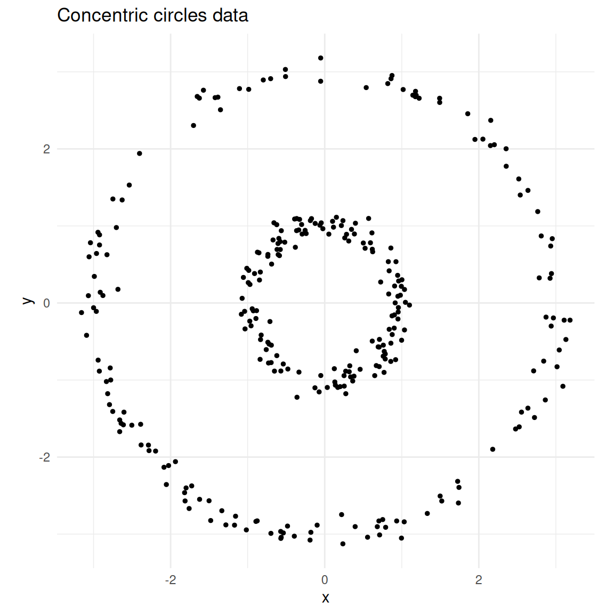
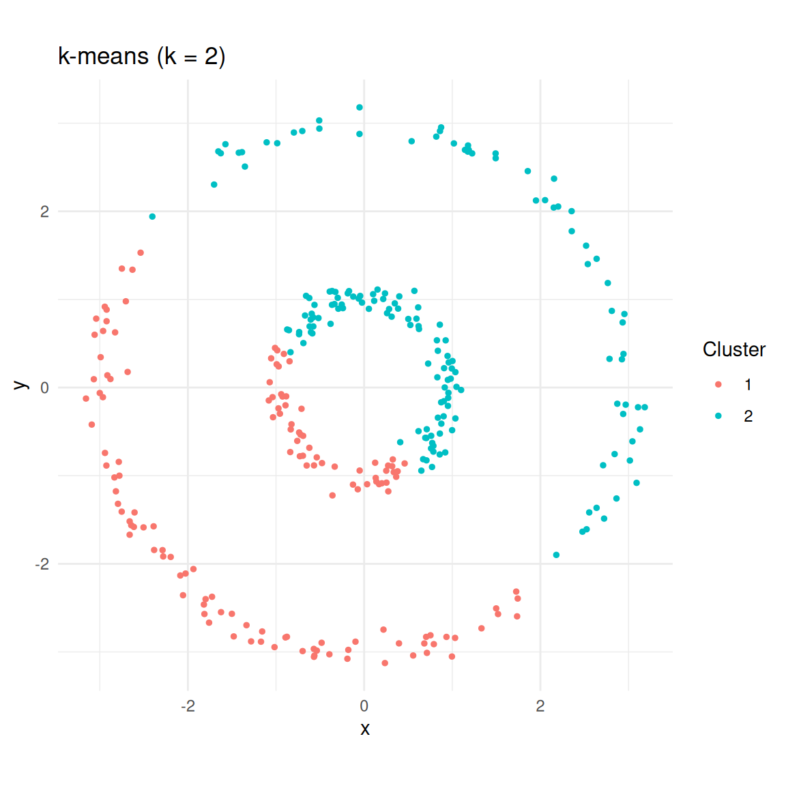
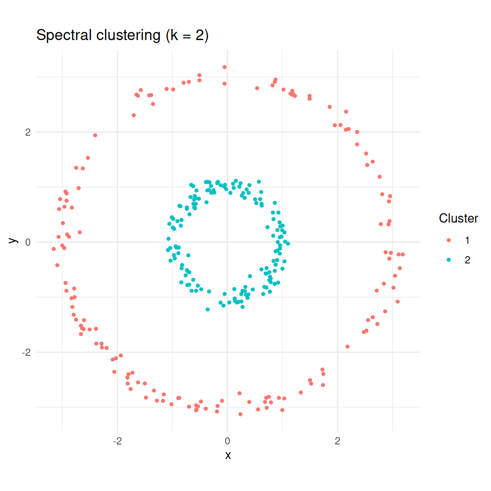
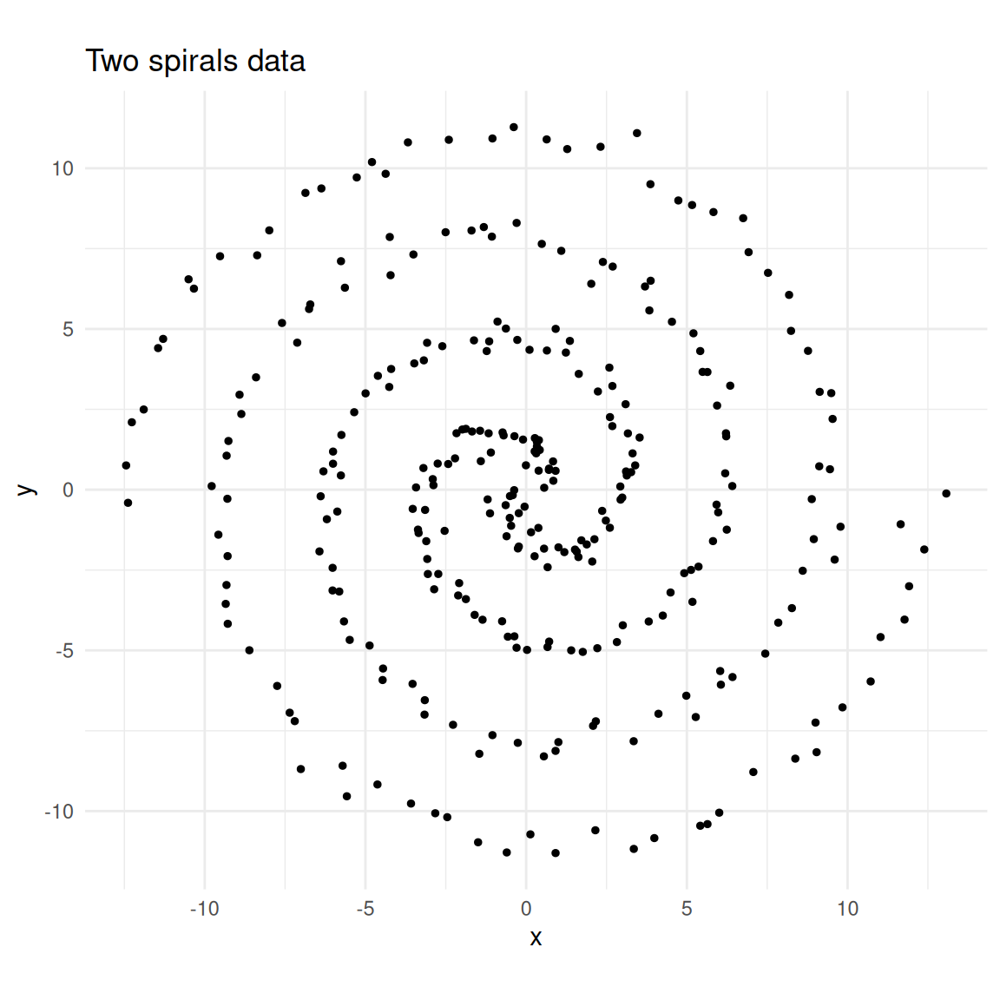
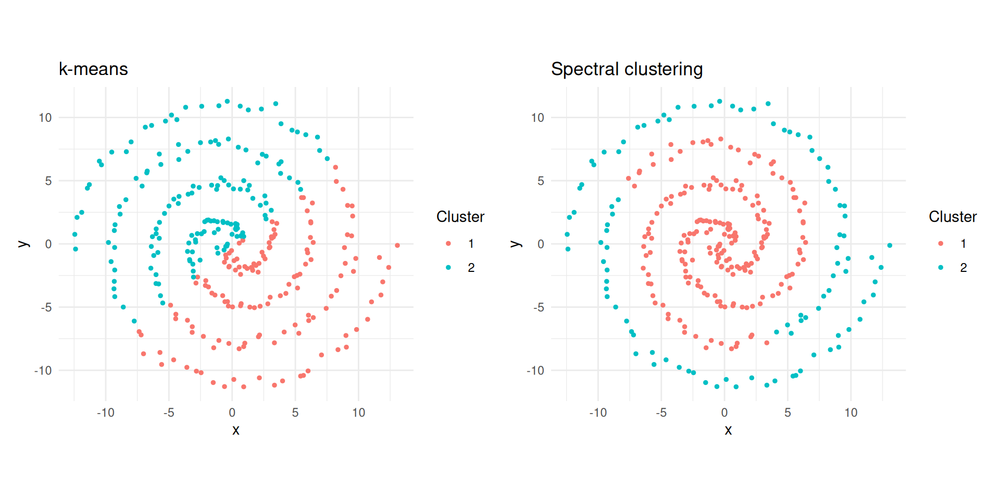
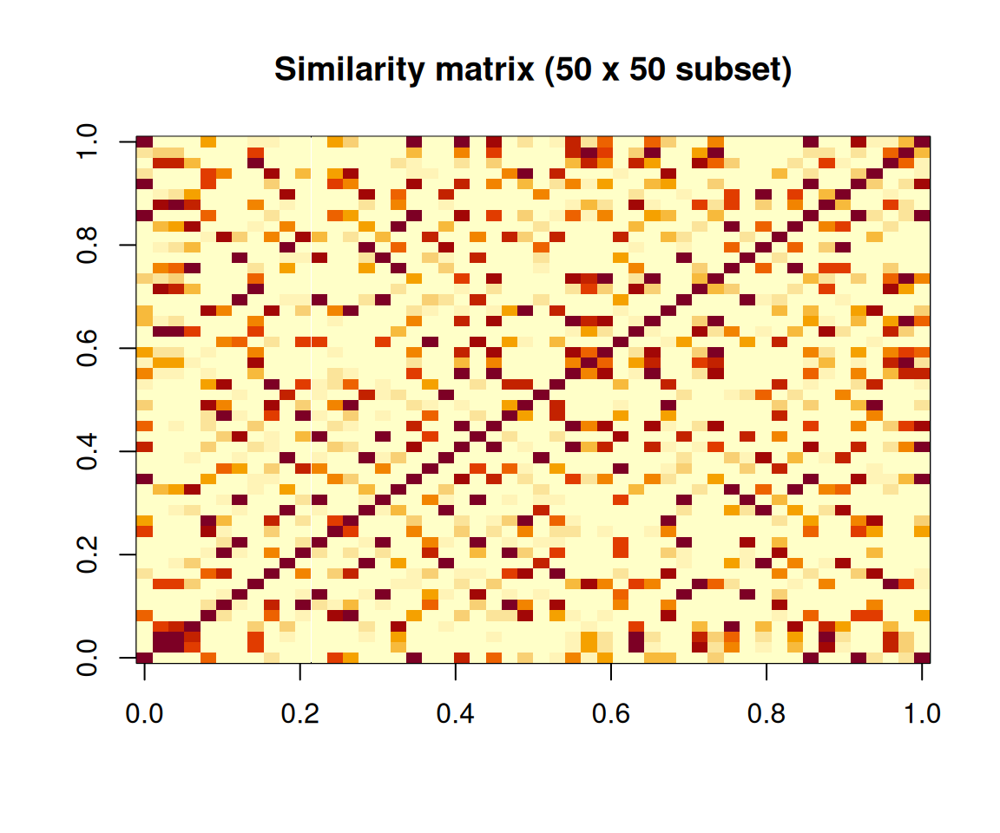
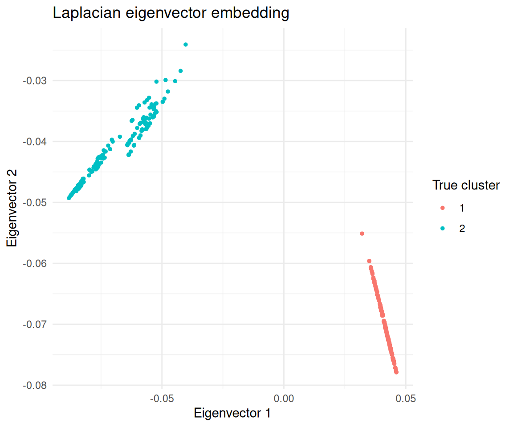
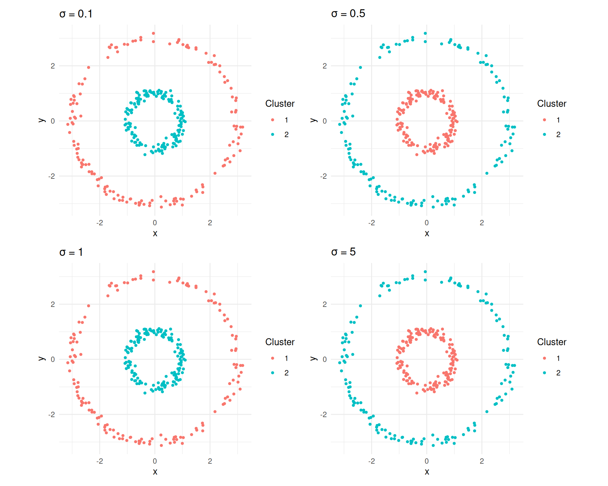
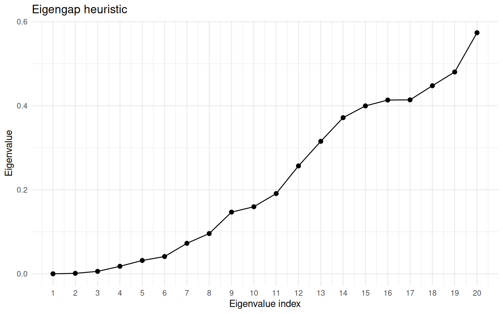
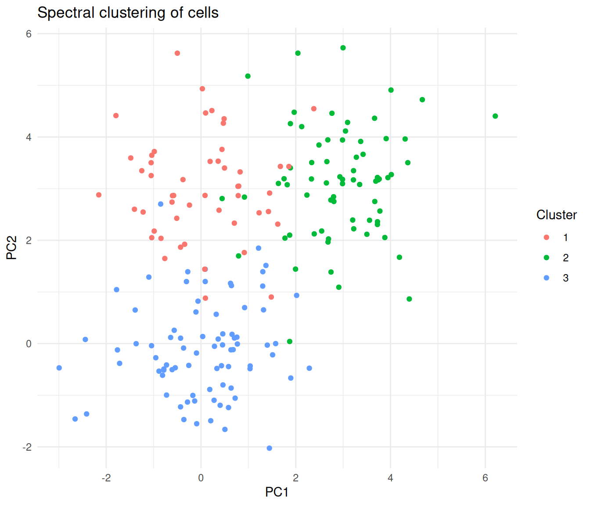

Last updated: 2026-04-06
Checks: 7 0
Knit directory: muse/
This reproducible R Markdown analysis was created with workflowr (version 1.7.2). The Checks tab describes the reproducibility checks that were applied when the results were created. The Past versions tab lists the development history.
Great! Since the R Markdown file has been committed to the Git repository, you know the exact version of the code that produced these results.
Great job! The global environment was empty. Objects defined in the global environment can affect the analysis in your R Markdown file in unknown ways. For reproduciblity it’s best to always run the code in an empty environment.
The command set.seed(20200712) was run prior to running
the code in the R Markdown file. Setting a seed ensures that any results
that rely on randomness, e.g. subsampling or permutations, are
reproducible.
Great job! Recording the operating system, R version, and package versions is critical for reproducibility.
Nice! There were no cached chunks for this analysis, so you can be confident that you successfully produced the results during this run.
Great job! Using relative paths to the files within your workflowr project makes it easier to run your code on other machines.
Great! You are using Git for version control. Tracking code development and connecting the code version to the results is critical for reproducibility.
The results in this page were generated with repository version 639294f. See the Past versions tab to see a history of the changes made to the R Markdown and HTML files.
Note that you need to be careful to ensure that all relevant files for
the analysis have been committed to Git prior to generating the results
(you can use wflow_publish or
wflow_git_commit). workflowr only checks the R Markdown
file, but you know if there are other scripts or data files that it
depends on. Below is the status of the Git repository when the results
were generated:
Ignored files:
Ignored: .Rproj.user/
Ignored: data/1M_neurons_filtered_gene_bc_matrices_h5.h5
Ignored: data/293t/
Ignored: data/293t_3t3_filtered_gene_bc_matrices.tar.gz
Ignored: data/293t_filtered_gene_bc_matrices.tar.gz
Ignored: data/5k_Human_Donor1_PBMC_3p_gem-x_5k_Human_Donor1_PBMC_3p_gem-x_count_sample_filtered_feature_bc_matrix.h5
Ignored: data/5k_Human_Donor2_PBMC_3p_gem-x_5k_Human_Donor2_PBMC_3p_gem-x_count_sample_filtered_feature_bc_matrix.h5
Ignored: data/5k_Human_Donor3_PBMC_3p_gem-x_5k_Human_Donor3_PBMC_3p_gem-x_count_sample_filtered_feature_bc_matrix.h5
Ignored: data/5k_Human_Donor4_PBMC_3p_gem-x_5k_Human_Donor4_PBMC_3p_gem-x_count_sample_filtered_feature_bc_matrix.h5
Ignored: data/97516b79-8d08-46a6-b329-5d0a25b0be98.h5ad
Ignored: data/Parent_SC3v3_Human_Glioblastoma_filtered_feature_bc_matrix.tar.gz
Ignored: data/brain_counts/
Ignored: data/cl.obo
Ignored: data/cl.owl
Ignored: data/jurkat/
Ignored: data/jurkat:293t_50:50_filtered_gene_bc_matrices.tar.gz
Ignored: data/jurkat_293t/
Ignored: data/jurkat_filtered_gene_bc_matrices.tar.gz
Ignored: data/pbmc20k/
Ignored: data/pbmc20k_seurat/
Ignored: data/pbmc3k.csv
Ignored: data/pbmc3k.csv.gz
Ignored: data/pbmc3k.h5ad
Ignored: data/pbmc3k/
Ignored: data/pbmc3k_bpcells_mat/
Ignored: data/pbmc3k_export.mtx
Ignored: data/pbmc3k_matrix.mtx
Ignored: data/pbmc3k_seurat.rds
Ignored: data/pbmc4k_filtered_gene_bc_matrices.tar.gz
Ignored: data/pbmc_1k_v3_filtered_feature_bc_matrix.h5
Ignored: data/pbmc_1k_v3_raw_feature_bc_matrix.h5
Ignored: data/refdata-gex-GRCh38-2020-A.tar.gz
Ignored: data/seurat_1m_neuron.rds
Ignored: data/t_3k_filtered_gene_bc_matrices.tar.gz
Ignored: r_packages_4.5.2/
Untracked files:
Untracked: .claude/
Untracked: CLAUDE.md
Untracked: analysis/.claude/
Untracked: analysis/aucc.Rmd
Untracked: analysis/bimodal.Rmd
Untracked: analysis/bioc.Rmd
Untracked: analysis/bioc_scrnaseq.Rmd
Untracked: analysis/chick_weight.Rmd
Untracked: analysis/likelihood.Rmd
Untracked: analysis/modelling.Rmd
Untracked: analysis/sampleqc.Rmd
Untracked: analysis/wordpress_readability.Rmd
Untracked: bpcells_matrix/
Untracked: data/Caenorhabditis_elegans.WBcel235.113.gtf.gz
Untracked: data/GCF_043380555.1-RS_2024_12_gene_ontology.gaf.gz
Untracked: data/SeuratObj.rds
Untracked: data/arab.rds
Untracked: data/astronomicalunit.csv
Untracked: data/davetang039sblog.WordPress.2026-02-12.xml
Untracked: data/femaleMiceWeights.csv
Untracked: data/lung_bcell.rds
Untracked: m3/
Untracked: women.json
Unstaged changes:
Modified: analysis/isoform_switch_analyzer.Rmd
Modified: analysis/linear_models.Rmd
Note that any generated files, e.g. HTML, png, CSS, etc., are not included in this status report because it is ok for generated content to have uncommitted changes.
These are the previous versions of the repository in which changes were
made to the R Markdown (analysis/spectral_clustering.Rmd)
and HTML (docs/spectral_clustering.html) files. If you’ve
configured a remote Git repository (see ?wflow_git_remote),
click on the hyperlinks in the table below to view the files as they
were in that past version.
| File | Version | Author | Date | Message |
|---|---|---|---|---|
| Rmd | 639294f | Dave Tang | 2026-04-06 | Spectral clustering |
if (!require("kernlab", quietly = TRUE)) {
install.packages("kernlab")
}
library(kernlab)Spectral clustering is a family of methods that use the eigenvalues (spectrum) of a similarity matrix to reduce the dimensionality of the data before clustering in fewer dimensions. Unlike k-means, which assumes clusters are convex (blob-shaped), spectral clustering can discover clusters with complex, non-convex shapes, such as concentric rings or interleaving spirals.
The intuition is rooted in graph theory. We treat observations as nodes in a graph, connect nearby observations with weighted edges, and then find a partition of the graph that cuts the fewest (or lowest-weight) edges. The eigenvectors of the graph Laplacian encode this connectivity structure and provide a low-dimensional representation where standard methods like k-means work well.
A motivating example comes from single-cell RNA-seq: you have thousands of cells measured across thousands of genes and need to identify cell types. Some populations form non-standard shapes — crescents, elongated streams, intertwined spirals — rather than round clusters in UMAP visualisations. Spectral clustering finds clusters based on connectivity rather than distance to a centre, making it well suited for these situations.
Before diving into spectral clustering, it helps to understand where standard methods break down.
k-means assigns each point to its nearest centroid. This works well for round, well-separated blobs, but it will always carve the space into convex (roughly spherical) Voronoi regions — even when the data does not conform to that geometry.
DBSCAN finds clusters by density and can handle arbitrary shapes, but requires choosing \(\varepsilon\) and MinPts. A single global density threshold struggles when clusters have varying densities.
The core question spectral clustering asks instead is: if I built a network connecting similar data points, which groups of points are tightly connected internally but loosely connected to each other? This reframes clustering as a graph partitioning problem — a shift from geometry (distances, centroids) to topology (connections, paths).
Think of a social network analogy: people (data points) are connected by friendships (similarity). Communities (clusters) are groups where everyone knows each other but has few friends outside. Finding clusters is equivalent to finding communities — cutting the fewest friendships to separate the groups.
Given \(n\) observations and a desired number of clusters \(k\):
| Step | What happens | Biological analogy |
|---|---|---|
| 1 | Build similarity matrix \(W\) | Compute cell–cell similarity from expression |
| 2 | Compute graph Laplacian \(L\) | Encode the cell–cell network structure |
| 3 | Find \(k\) smallest eigenvectors | Embed cells into a space where clusters are clear |
| 4 | Run k-means on eigenvectors | Assign cell type labels |
The bandwidth parameter \(\sigma\) controls neighbourhood size: a small \(\sigma\) only connects very close points, while a large \(\sigma\) connects more distant points. Spectral clustering transforms a hard non-convex problem into an easy convex one.
k-means fails on non-convex shapes because it partitions space into Voronoi cells. Spectral clustering handles this naturally.
set.seed(1984)
n <- 300
theta_inner <- runif(n / 2, 0, 2 * pi)
inner <- data.frame(
x = cos(theta_inner) + rnorm(n / 2, sd = 0.1),
y = sin(theta_inner) + rnorm(n / 2, sd = 0.1),
true_cluster = 1L
)
theta_outer <- runif(n / 2, 0, 2 * pi)
outer <- data.frame(
x = 3 * cos(theta_outer) + rnorm(n / 2, sd = 0.1),
y = 3 * sin(theta_outer) + rnorm(n / 2, sd = 0.1),
true_cluster = 2L
)
circles <- rbind(inner, outer)
ggplot(circles, aes(x, y)) +
geom_point(size = 1) +
coord_equal() +
theme_minimal() +
labs(title = "Concentric circles data")
Two concentric circles — a classic non-convex clustering problem.
km <- kmeans(circles[, c("x", "y")], centers = 2, nstart = 25)
circles$kmeans <- factor(km$cluster)
ggplot(circles, aes(x, y, colour = kmeans)) +
geom_point(size = 1) +
coord_equal() +
theme_minimal() +
labs(title = "k-means (k = 2)", colour = "Cluster")
k-means splits the data into two halves rather than recognising the rings.
The {kernlab} package provides specc(), which implements
the spectral clustering algorithm using an RBF kernel.
sc <- specc(as.matrix(circles[, c("x", "y")]), centers = 2)
circles$spectral <- factor(sc@.Data)
ggplot(circles, aes(x, y, colour = spectral)) +
geom_point(size = 1) +
coord_equal() +
theme_minimal() +
labs(title = "Spectral clustering (k = 2)", colour = "Cluster")
Spectral clustering correctly identifies the two rings.
Spirals are another topology where k-means fails badly.
set.seed(1984)
n <- 300
t <- seq(0.5, 4 * pi, length.out = n / 2)
spiral1 <- data.frame(
x = t * cos(t) + rnorm(n / 2, sd = 0.3),
y = t * sin(t) + rnorm(n / 2, sd = 0.3),
true_cluster = 1L
)
spiral2 <- data.frame(
x = t * cos(t + pi) + rnorm(n / 2, sd = 0.3),
y = t * sin(t + pi) + rnorm(n / 2, sd = 0.3),
true_cluster = 2L
)
spirals <- rbind(spiral1, spiral2)
ggplot(spirals, aes(x, y)) +
geom_point(size = 1) +
coord_equal() +
theme_minimal() +
labs(title = "Two spirals data")
Two interleaving spirals.
km_spiral <- kmeans(spirals[, c("x", "y")], centers = 2, nstart = 25)
sc_spiral <- specc(as.matrix(spirals[, c("x", "y")]), centers = 2)
spirals$kmeans <- factor(km_spiral$cluster)
spirals$spectral <- factor(sc_spiral@.Data)
p1 <- ggplot(spirals, aes(x, y, colour = kmeans)) +
geom_point(size = 1) +
coord_equal() +
theme_minimal() +
labs(title = "k-means", colour = "Cluster")
p2 <- ggplot(spirals, aes(x, y, colour = spectral)) +
geom_point(size = 1) +
coord_equal() +
theme_minimal() +
labs(title = "Spectral clustering", colour = "Cluster")
library(patchwork)
p1 + p2
k-means vs spectral clustering on two spirals.
To demystify the algorithm, let us implement each step manually on the concentric circles data.
X <- as.matrix(circles[, c("x", "y")])
sigma <- 0.5
dist_sq <- as.matrix(dist(X))^2
W <- exp(-dist_sq / (2 * sigma^2))
image(
W[1:50, 1:50],
main = "Similarity matrix (50 x 50 subset)",
xlab = "",
ylab = ""
)
Heatmap of the similarity matrix (first 50 observations).
We compute the normalised Laplacian \(L_\text{sym} = I - D^{-1/2} W D^{-1/2}\).
A useful physical analogy: imagine each data point as a mass and each similarity weight as a spring connecting two masses. Strong similarities are stiff springs; weak similarities are loose springs. Masses connected by stiff springs move together when the system vibrates. The lowest-frequency vibration modes (eigenvectors of \(L\) with the smallest eigenvalues) reveal which groups of masses move together — and those groups are the clusters.
D_vec <- rowSums(W)
D_inv_sqrt <- diag(1 / sqrt(D_vec))
L_sym <- diag(nrow(W)) - D_inv_sqrt %*% W %*% D_inv_sqrtThe smallest eigenvalue of \(L_\text{sym}\) is always zero. The next \(k - 1\) eigenvectors carry the clustering information.
eig <- eigen(L_sym, symmetric = TRUE)
# Eigenvectors for the two smallest eigenvalues
U <- eig$vectors[, (ncol(eig$vectors) - 1):ncol(eig$vectors)]
df_eig <- data.frame(
ev1 = U[, 1],
ev2 = U[, 2],
true_cluster = factor(circles$true_cluster)
)
ggplot(df_eig, aes(ev1, ev2, colour = true_cluster)) +
geom_point(size = 1) +
theme_minimal() +
labs(
title = "Laplacian eigenvector embedding",
x = "Eigenvector 1",
y = "Eigenvector 2",
colour = "True cluster"
)
Observations projected onto the second eigenvector of the Laplacian, coloured by true cluster.
In this embedding the two clusters are linearly separable, so k-means works.
km_eig <- kmeans(U, centers = 2, nstart = 25)
table(manual = km_eig$cluster, true = circles$true_cluster) true
manual 1 2
1 0 150
2 150 0specc()A kernel function measures similarity between two data points. Formally, \(k(x, x')\) computes a dot product in some (possibly infinite-dimensional) feature space without explicitly transforming the data. The similarity matrix \(W\) at the heart of spectral clustering is a kernel matrix — different kernels define different notions of “similar”.
| Kernel | Formula | When to use |
|---|---|---|
| Gaussian RBF | \(\exp\!\left(-\frac{\|x - x'\|^2}{2\sigma^2}\right)\) | Most common; general-purpose clustering |
| Polynomial | \((s \langle x, x' \rangle + c)^d\) | When relationships are polynomial |
| Linear | \(\langle x, x' \rangle\) | Equivalent to PCA-based approaches |
Choosing a kernel is like choosing a distance metric for your cells. The Gaussian RBF says “cells within a certain neighbourhood are similar, and similarity falls off smoothly with distance”. The \(\sigma\) parameter controls how big that neighbourhood is.
specc() parametersThe {kernlab} package uses R’s S4 object system, so results are
accessed with functions like centers(),
size(), and withinss() rather than
$ notation.
| Parameter | Default | What it controls |
|---|---|---|
centers |
(required) | Number of clusters \(k\) |
kernel |
"rbfdot" |
Kernel function for similarity |
kpar |
"automatic" |
Kernel hyperparameters; "automatic" uses a
heuristic; "local" uses per-point adaptive scaling |
iterations |
200 | Max iterations for the k-means step |
nystrom.red |
FALSE |
Nyström approximation for large datasets |
sc_demo <- specc(as.matrix(circles[, c("x", "y")]), centers = 2)
centers(sc_demo) # Cluster centroids (in eigenvector space) [,1] [,2]
[1,] 0.03190248 0.04235691
[2,] -0.22029574 -0.39315947size(sc_demo) # Number of points per cluster[1] 150 150withinss(sc_demo) # Within-cluster sum of squares[1] 151.8515 1336.6020head(sc_demo@.Data) # Cluster assignments as integer vector[1] 1 1 1 1 1 1The classical formula uses bandwidth \(\sigma\) where a larger \(\sigma\) means a wider neighbourhood.
However, {kernlab} parameterises the RBF kernel as \(\sigma_\text{kl} = 1 / (2\sigma^2)\), so a
larger sigma in {kernlab} means a
narrower neighbourhood (opposite convention). You do
not need to remember this if you use the automatic settings.
When kpar = "automatic", {kernlab} estimates \(\sigma\) by sampling pairwise distances and
picking a value between the 0.1 and 0.9 quantiles of \(\|x - x'\|\) distances. The
kpar = "local" option computes a local width for each point
based on neighbourhood density, handling clusters at different densities
(analogous to how HDBSCAN adapts its density threshold).
The bandwidth \(\sigma\) has a large impact on results. Too small and the graph fragments into many tiny clusters; too large and even distant points are considered similar, merging everything into one cluster.
sigmas <- c(0.1, 0.5, 1, 5)
plots <- lapply(sigmas, function(s) {
rbf <- rbfdot(sigma = 1 / (2 * s^2))
sc_s <- specc(X, centers = 2, kernel = rbf)
df <- data.frame(x = X[, 1], y = X[, 2], cluster = factor(sc_s@.Data))
ggplot(df, aes(x, y, colour = cluster)) +
geom_point(size = 1) +
coord_equal() +
theme_minimal() +
labs(title = bquote(sigma == .(s)), colour = "Cluster")
})
library(patchwork)
wrap_plots(plots, ncol = 2)
Spectral clustering results for different sigma values on the concentric circles.
Spectral clustering requires specifying \(k\). The eigengap heuristic provides a data-driven way to choose it:
If the data has \(k\) well-separated clusters, the first \(k\) eigenvalues will be very small (near zero) with a large jump to \(\lambda_{k+1}\). For example, eigenvalues of 0.01, 0.02, 0.03, 0.8, 1.2, … suggest 3 clusters.
eigenvalues <- sort(eig$values)
n_show <- 20
df_eig_vals <- data.frame(
index = seq_len(n_show),
eigenvalue = eigenvalues[seq_len(n_show)]
)
ggplot(df_eig_vals, aes(index, eigenvalue)) +
geom_point(size = 2) +
geom_line() +
scale_x_continuous(breaks = seq_len(n_show)) +
theme_minimal() +
labs(
title = "Eigengap heuristic",
x = "Eigenvalue index",
y = "Eigenvalue"
)
Eigenvalue spectrum of the graph Laplacian for the concentric circles. The gap after the second eigenvalue indicates k = 2.
When clusters are not well separated, the eigengap may be small and ambiguous. In such cases, combine with other metrics like silhouette scores.
A common workflow in single-cell analysis is to cluster cells in PCA space. Here we simulate three cell types with distinct expression programmes across 10 PCs.
set.seed(42)
group1 <- matrix(rnorm(80 * 10, mean = 0), ncol = 10)
group2 <- matrix(rnorm(70 * 10, mean = 3), ncol = 10)
group3 <- matrix(rnorm(50 * 10, mean = rep(c(0, 3), 5)),
ncol = 10, byrow = TRUE)
pca_data <- rbind(group1, group2, group3)
true_labels <- rep(1:3, c(80, 70, 50))
sc_expr <- specc(pca_data, centers = 3)
table(spectral = sc_expr@.Data, true = true_labels) true
spectral 1 2 3
1 0 0 50
2 0 70 0
3 80 0 0df_expr <- data.frame(
PC1 = pca_data[, 1],
PC2 = pca_data[, 2],
cluster = factor(sc_expr@.Data)
)
ggplot(df_expr, aes(PC1, PC2, colour = cluster)) +
geom_point(size = 1.5) +
theme_minimal() +
labs(
title = "Spectral clustering of cells",
colour = "Cluster"
)
Cells coloured by spectral cluster assignment, projected onto the first two PCs.
kpar = "local"When clusters have varying densities, the "local" option
computes a per-point kernel width rather than a single global \(\sigma\).
sc_local <- specc(pca_data, centers = 3, kpar = "local")
table(local = sc_local@.Data, true = true_labels) true
local 1 2 3
1 7 0 0
2 73 0 0
3 0 70 50Spectral clustering computes an \(n \times n\) similarity matrix and its eigendecomposition, giving \(O(n^3)\) time complexity. For large datasets, {kernlab} provides the Nyström approximation, which samples a subset of points to approximate the eigendecomposition.
# For a dataset with 50,000 cells
sc_large <- specc(large_data, centers = 10,
nystrom.red = TRUE,
nystrom.sample = 5000)| Dataset size | Approach |
|---|---|
| \(< 5{,}000\) points | Use specc() directly |
| \(5{,}000\)–\(50{,}000\) | Enable nystrom.red = TRUE |
| \(> 50{,}000\) | Consider specialised tools (Spectrum, Specter) |
For very large single-cell datasets, tools like Spectrum (density-aware spectral clustering) and Specter are optimised for hundreds of thousands of cells.
Spectral clustering gives you direct control over \(k\) and uses a mathematically principled eigendecomposition, while Louvain/Leiden resolution parameters have a less direct interpretation.
Spatial transcriptomics data can combine spatial coordinates with gene expression to define similarity. Spectral clustering identifies tissue domains coherent in both space and expression, and the kernel can weight spatial and molecular similarity differently.
Residue–residue contact maps define a natural graph. Spectral clustering of this graph identifies protein domains — structurally compact units that fold semi-independently.
Species co-occurrence data defines a network. Spectral clustering of the co-occurrence graph identifies ecological communities — groups of species that tend to appear together. This works because community boundaries are rarely spherical in species-space.
Ignoring the kernel width parameter. Using
kpar = "automatic" without checking may give poor results.
Always visualise your clusters and consider trying
kpar = "local" if clusters have varying densities.
Forgetting to scale features. Like k-means, spectral clustering is affected by feature scales. High-magnitude features dominate similarity computation. Standardise first, or work with PCA components (which have consistent units).
Wrong number of clusters. Use the eigengap heuristic or combine with silhouette analysis — do not just guess.
Assuming it handles noise like DBSCAN. Spectral clustering assigns every point to a cluster with no built-in noise detection. Outliers are forced into the nearest cluster. Pre-filter problematic cells (doublets, damaged cells) before clustering.
Running on too many features. Spectral clustering works best in low to moderate dimensions. On raw gene expression (thousands of features), the similarity matrix becomes noisy. Always reduce dimensions first (PCA) and then cluster the top components.
| Criterion | k-Means | DBSCAN | Spectral | Louvain/Leiden |
|---|---|---|---|---|
| Cluster shape | Spherical | Arbitrary | Arbitrary | Arbitrary |
| Must specify \(k\) | Yes | No | Yes | No (resolution) |
| Noise handling | None | Built-in | None | None |
| Varying density | Poor | Poor | Moderate (local scaling) | Good |
| Scalability | Excellent | Good | Moderate (Nyström helps) | Excellent |
| Non-convex clusters | No | Yes | Yes | Yes |
| Theoretical basis | Minimise variance | Density reachability | Graph partitioning | Modularity optimisation |
| Best for | Round blobs | Dense, noisy data | Complex shapes, moderate \(n\) | Large-scale scRNA-seq |
For moderate-sized datasets with complex cluster shapes, spectral clustering is an excellent choice. For very large scRNA-seq datasets, Louvain/Leiden (as used in Seurat and Scanpy) scale better.
Preprocessing:
Choosing parameters:
kpar = "automatic" and inspect results.kpar = "local" for adaptive scaling.When to move beyond {kernlab}:
sessionInfo()R version 4.5.2 (2025-10-31)
Platform: x86_64-pc-linux-gnu
Running under: Ubuntu 24.04.4 LTS
Matrix products: default
BLAS: /usr/lib/x86_64-linux-gnu/openblas-pthread/libblas.so.3
LAPACK: /usr/lib/x86_64-linux-gnu/openblas-pthread/libopenblasp-r0.3.26.so; LAPACK version 3.12.0
locale:
[1] LC_CTYPE=en_US.UTF-8 LC_NUMERIC=C
[3] LC_TIME=en_US.UTF-8 LC_COLLATE=en_US.UTF-8
[5] LC_MONETARY=en_US.UTF-8 LC_MESSAGES=en_US.UTF-8
[7] LC_PAPER=en_US.UTF-8 LC_NAME=C
[9] LC_ADDRESS=C LC_TELEPHONE=C
[11] LC_MEASUREMENT=en_US.UTF-8 LC_IDENTIFICATION=C
time zone: Etc/UTC
tzcode source: system (glibc)
attached base packages:
[1] stats graphics grDevices utils datasets methods base
other attached packages:
[1] patchwork_1.3.2 kernlab_0.9-33 lubridate_1.9.5 forcats_1.0.1
[5] stringr_1.6.0 dplyr_1.2.0 purrr_1.2.1 readr_2.2.0
[9] tidyr_1.3.2 tibble_3.3.1 ggplot2_4.0.2 tidyverse_2.0.0
[13] workflowr_1.7.2
loaded via a namespace (and not attached):
[1] sass_0.4.10 generics_0.1.4 stringi_1.8.7 hms_1.1.4
[5] digest_0.6.39 magrittr_2.0.4 timechange_0.4.0 evaluate_1.0.5
[9] grid_4.5.2 RColorBrewer_1.1-3 fastmap_1.2.0 rprojroot_2.1.1
[13] jsonlite_2.0.0 processx_3.8.6 whisker_0.4.1 ps_1.9.1
[17] promises_1.5.0 httr_1.4.8 scales_1.4.0 jquerylib_0.1.4
[21] cli_3.6.5 rlang_1.1.7 withr_3.0.2 cachem_1.1.0
[25] yaml_2.3.12 otel_0.2.0 tools_4.5.2 tzdb_0.5.0
[29] httpuv_1.6.17 vctrs_0.7.2 R6_2.6.1 lifecycle_1.0.5
[33] git2r_0.36.2 fs_2.0.1 pkgconfig_2.0.3 callr_3.7.6
[37] pillar_1.11.1 bslib_0.10.0 later_1.4.8 gtable_0.3.6
[41] glue_1.8.0 Rcpp_1.1.1 xfun_0.57 tidyselect_1.2.1
[45] rstudioapi_0.18.0 knitr_1.51 farver_2.1.2 htmltools_0.5.9
[49] labeling_0.4.3 rmarkdown_2.31 compiler_4.5.2 getPass_0.2-4
[53] S7_0.2.1
sessionInfo()R version 4.5.2 (2025-10-31)
Platform: x86_64-pc-linux-gnu
Running under: Ubuntu 24.04.4 LTS
Matrix products: default
BLAS: /usr/lib/x86_64-linux-gnu/openblas-pthread/libblas.so.3
LAPACK: /usr/lib/x86_64-linux-gnu/openblas-pthread/libopenblasp-r0.3.26.so; LAPACK version 3.12.0
locale:
[1] LC_CTYPE=en_US.UTF-8 LC_NUMERIC=C
[3] LC_TIME=en_US.UTF-8 LC_COLLATE=en_US.UTF-8
[5] LC_MONETARY=en_US.UTF-8 LC_MESSAGES=en_US.UTF-8
[7] LC_PAPER=en_US.UTF-8 LC_NAME=C
[9] LC_ADDRESS=C LC_TELEPHONE=C
[11] LC_MEASUREMENT=en_US.UTF-8 LC_IDENTIFICATION=C
time zone: Etc/UTC
tzcode source: system (glibc)
attached base packages:
[1] stats graphics grDevices utils datasets methods base
other attached packages:
[1] patchwork_1.3.2 kernlab_0.9-33 lubridate_1.9.5 forcats_1.0.1
[5] stringr_1.6.0 dplyr_1.2.0 purrr_1.2.1 readr_2.2.0
[9] tidyr_1.3.2 tibble_3.3.1 ggplot2_4.0.2 tidyverse_2.0.0
[13] workflowr_1.7.2
loaded via a namespace (and not attached):
[1] sass_0.4.10 generics_0.1.4 stringi_1.8.7 hms_1.1.4
[5] digest_0.6.39 magrittr_2.0.4 timechange_0.4.0 evaluate_1.0.5
[9] grid_4.5.2 RColorBrewer_1.1-3 fastmap_1.2.0 rprojroot_2.1.1
[13] jsonlite_2.0.0 processx_3.8.6 whisker_0.4.1 ps_1.9.1
[17] promises_1.5.0 httr_1.4.8 scales_1.4.0 jquerylib_0.1.4
[21] cli_3.6.5 rlang_1.1.7 withr_3.0.2 cachem_1.1.0
[25] yaml_2.3.12 otel_0.2.0 tools_4.5.2 tzdb_0.5.0
[29] httpuv_1.6.17 vctrs_0.7.2 R6_2.6.1 lifecycle_1.0.5
[33] git2r_0.36.2 fs_2.0.1 pkgconfig_2.0.3 callr_3.7.6
[37] pillar_1.11.1 bslib_0.10.0 later_1.4.8 gtable_0.3.6
[41] glue_1.8.0 Rcpp_1.1.1 xfun_0.57 tidyselect_1.2.1
[45] rstudioapi_0.18.0 knitr_1.51 farver_2.1.2 htmltools_0.5.9
[49] labeling_0.4.3 rmarkdown_2.31 compiler_4.5.2 getPass_0.2-4
[53] S7_0.2.1